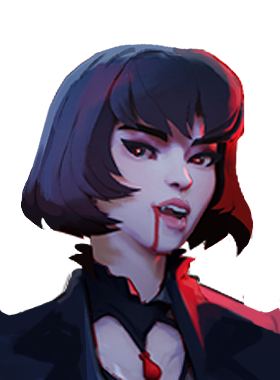

Místico de truques e ilusões, bom para confundir o inimigo.
História
Os pais de Henry disseram que ele era muito jovem e impulsivo para mexer com magia de verdade, e então lhe deram um baralho de cartas para brincar. Ele aprendeu a prestidigitar naturalmente e logo estava deslumbrando seus colegas de classe com feitos fantásticos de ilusões que eram realizados sem artefatos místicos ou encantamentos.
Quando ele estava no ensino médio, ele conheceu Savannah, e seu amor mútuo pela magia do palco gerou um romance turbulento. Logo eles se apaixonaram e criaram um ato juntos. Obviamente eles estavam destinados a existir; e assim, no baile, Henry pediu Savannah em casamento e eles se casaram logo após a formatura.
Não é de surpreender que ambos os pais não tenham ficado entusiasmados com essa perspectiva, mas Henry e Savannah sabiam que eram almas gêmeas. E assim eles consolidaram seu amor um pelo outro ao fazer com que um místico de sangue prendesse suas almas para a eternidade.
Quando um acidente no palco custou a vida de ambos, ninguém sabia quem culpar. Henry afirma que Savannah estava fora de posição. Savannah diz que Henry não esperou pela deixa. Mas uma coisa é certa, já que suas almas estão ligadas uma à outra, nenhum deles conseguiu seguir em frente. Agora um par de fantasmas briguentos, Henry e Savannah precisam trabalhar juntos se quiserem ter alguma chance de desfazer sua união eterna.
História oficial do jogo, traduzida automaticamente para o português.
Números reais
Habilidades

Dispara um raio mágico que causa mais dano quanto mais longe vai; com o Assistente em campo, ele também dispara um raio mais fraco.

Invoca um Assistente num local alvo que ataca sempre que você atira; a habilidade 2 troca sua posição com a do Assistente.

Enfeitiça uma área e transforma todos os inimigos dentro em Coelhos por um tempo limitado.

Copia a suprema de um herói inimigo por um tempo; reativar usa a suprema copiada.
Builds mais usadas
2.406 partidas registradas com esta build.
🏆 Rodadas de alta velocidade (800) · 🏆 Rodadas de Abertura (1.600) · 🏆 Taxa Extra (800) · 🏆 Espírito Melhorado (1.600) · 🏆 Recarga rápida (3.200) · 🏆 Colecionador de Troféus (1.600) · 🏆 Emblema do Encantador (1.600) · 🏆 Trama de Sombra (3.200) · 🏆 Dissipar Magia (3.200) · 🏆 Pedra de Urdidura (3.200)
2.152 partidas registradas com esta build.
Rodadas de alta velocidade (800) · Rodadas de Abertura (1.600) · Espírito Extra (800) · Taxa Extra (800) · Recarga rápida (3.200) · Espírito Melhorado (1.600) · Seiva Espiritual (1.600) · Colecionador de Troféus (1.600) · Andador do Véu (3.200) · Dissipar Magia (3.200)
1.415 partidas registradas com esta build.
Rodadas de alta velocidade (800) · Grão (800) · Rodadas de Abertura (1.600) · Surto Arcano (1.600) · Fogo Alquímico (3.200) · Ala dos Guardiões (1.600) · Rodadas Monstruosas (800) · Barril Enferrujado (800) · Regeneração Extra (800) · Barreira Reativa (1.600)
Confrontos reais
 Deadman Danny — 53.3% de vitória
Deadman Danny — 53.3% de vitória The Doorman — 50.9% de vitória
The Doorman — 50.9% de vitória Pocket — 50.9% de vitória
Pocket — 50.9% de vitória Shiv — 50.4% de vitória
Shiv — 50.4% de vitória Mirage — 50.4% de vitória
Mirage — 50.4% de vitória
Mina — 50.0% de vitória
 Graves — 39.5% de vitória
Graves — 39.5% de vitória Victor — 40.9% de vitória
Victor — 40.9% de vitória Paige — 41.0% de vitória
Paige — 41.0% de vitória Haze — 41.4% de vitória
Haze — 41.4% de vitória Rat King — 41.4% de vitória
Rat King — 41.4% de vitória Seven — 41.6% de vitória
Seven — 41.6% de vitória
Histórico de win rate
07/09: 45.4% → 26/10: 46.7% → 14/12: 45.1% → 01/02: 48.2% → 22/03: 45.5% → 10/05: 46.0% → 28/06: 44.0% → 16/08: 45.0% → 04/10: 47.3%